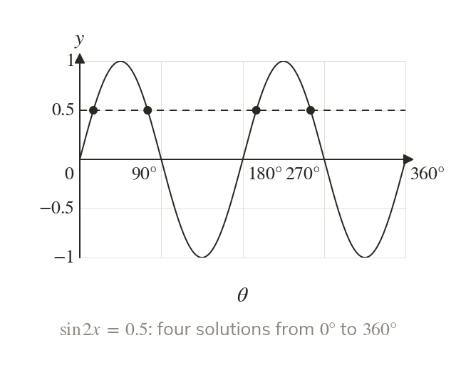
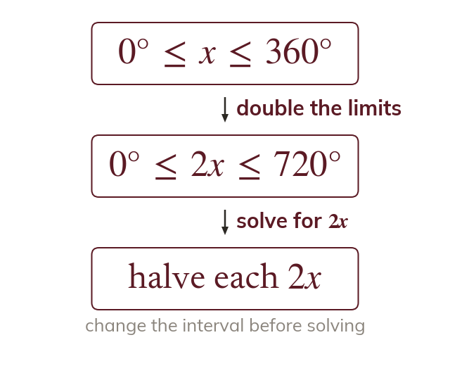
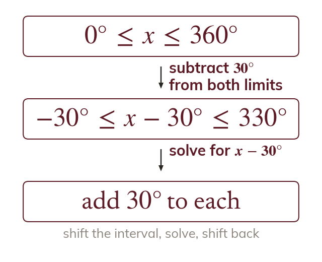
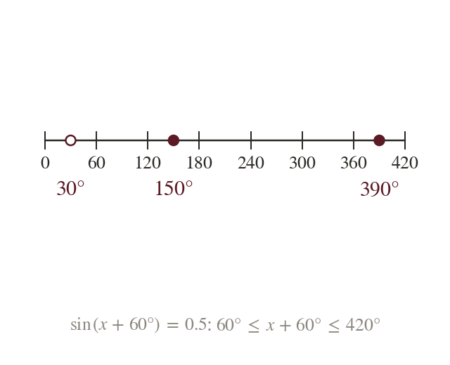

A multiple of x squeezes the graph
The graph of repeats every so it fits two waves into to So has twice as many solutions as
Exam equations rarely ask for directly: they ask for or Writing X for the angle turns each into last lesson's equation, provided the interval changes with it.
Work down the page at your own pace. Write every answer in your book first, then click to check it.
Read each card, then follow the worked examples one step at a time.

The graph of repeats every so it fits two waves into to So has twice as many solutions as

When runs from to runs from to Every solution for in that range gives one for
Pick an answer. If it's wrong, the feedback tells you which mistake it was.
Read each card, then follow the worked examples one step at a time.

When runs from to runs from to The whole interval shifts by the same amount as the angle.

A solution for the shifted angle can now be below or above Keep every value inside the new interval and no others.
Pick an answer. If it's wrong, the feedback tells you which mistake it was.
Finished? Next lesson: 10.6 Equations and Identities.
For each skill, tap the one that is true for you today. Your Revise pages start with anything you mark Not yet.
Your ratings are saved on this device only.
Log in, then search for a code to practise that skill.